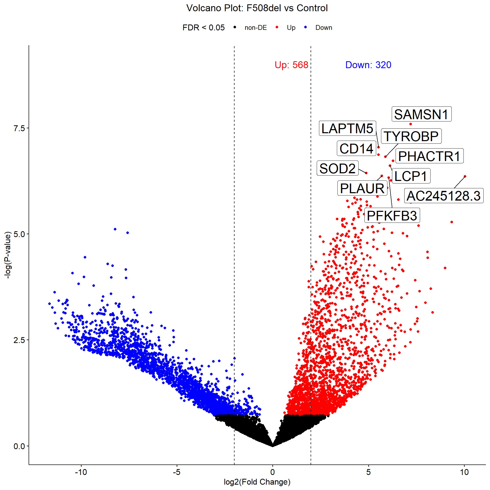
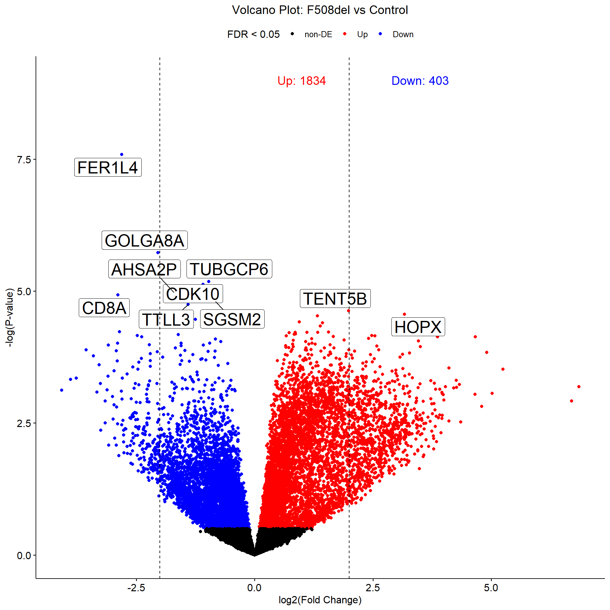
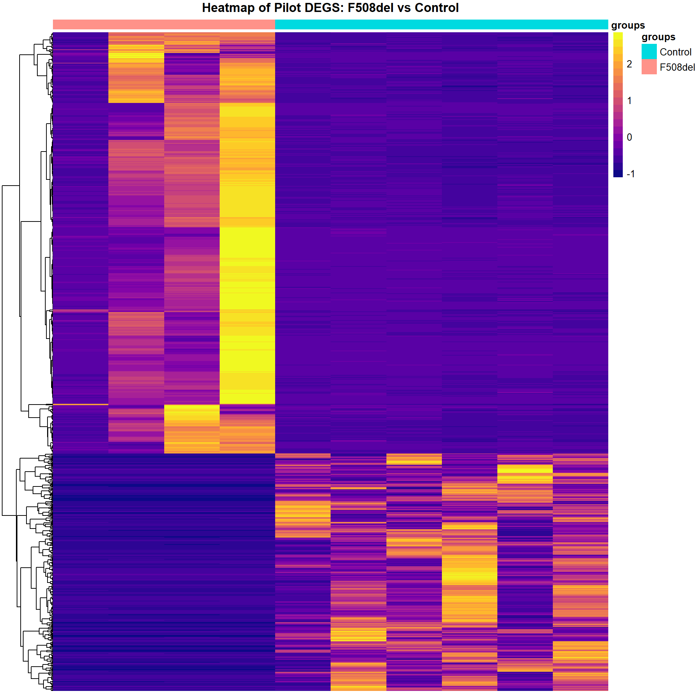
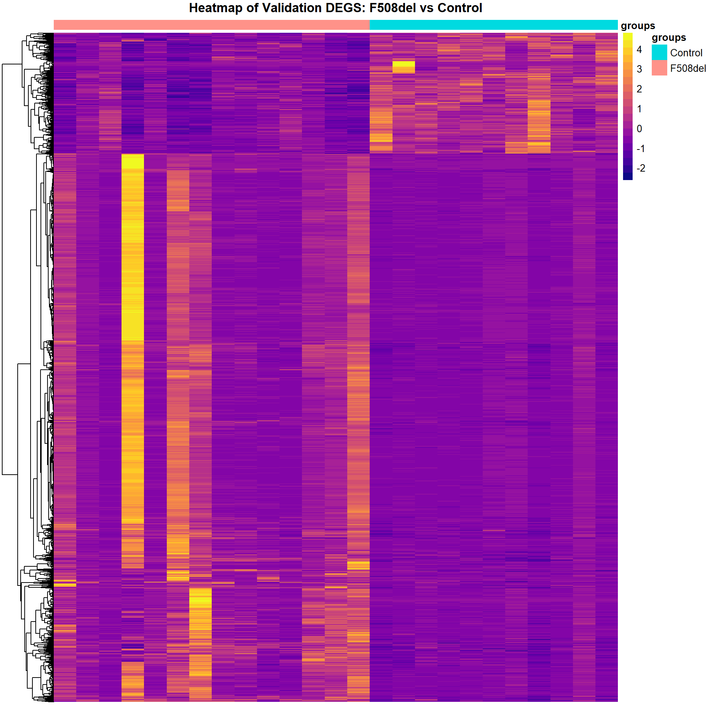
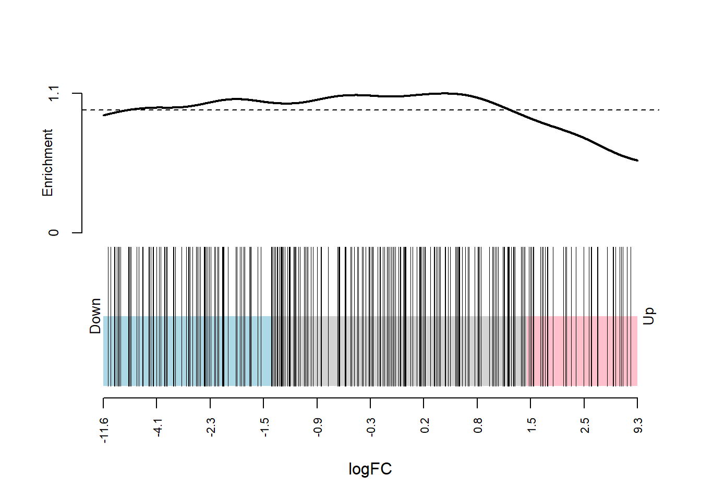
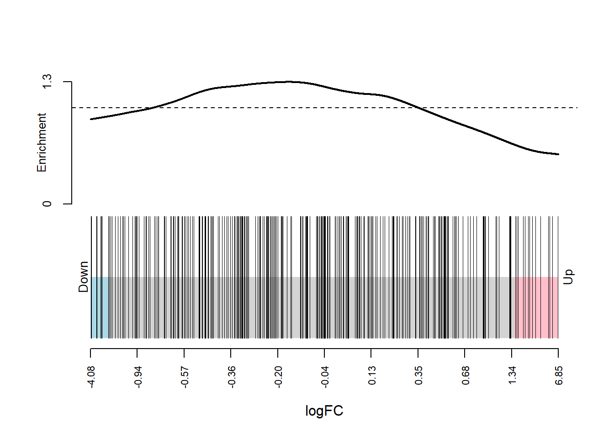

Workflow
Last updated: 2020-12-15
Checks: 7 0
Knit directory: 20201005_CF_Manuscript_Repo/
This reproducible R Markdown analysis was created with workflowr (version 1.6.2). The Checks tab describes the reproducibility checks that were applied when the results were created. The Past versions tab lists the development history.
Great! Since the R Markdown file has been committed to the Git repository, you know the exact version of the code that produced these results.
Great job! The global environment was empty. Objects defined in the global environment can affect the analysis in your R Markdown file in unknown ways. For reproduciblity it’s best to always run the code in an empty environment.
The command set.seed(20200923) was run prior to running the code in the R Markdown file. Setting a seed ensures that any results that rely on randomness, e.g. subsampling or permutations, are reproducible.
Great job! Recording the operating system, R version, and package versions is critical for reproducibility.
Nice! There were no cached chunks for this analysis, so you can be confident that you successfully produced the results during this run.
Great job! Using relative paths to the files within your workflowr project makes it easier to run your code on other machines.
Great! You are using Git for version control. Tracking code development and connecting the code version to the results is critical for reproducibility.
The results in this page were generated with repository version fa2a512. See the Past versions tab to see a history of the changes made to the R Markdown and HTML files.
Note that you need to be careful to ensure that all relevant files for the analysis have been committed to Git prior to generating the results (you can use wflow_publish or wflow_git_commit). workflowr only checks the R Markdown file, but you know if there are other scripts or data files that it depends on. Below is the status of the Git repository when the results were generated:
Ignored files:
Ignored: .Rhistory
Ignored: .Rproj.user/
Untracked files:
Untracked: 20200924_DEG_regulation_table.xlsx
Untracked: 20201203_Pilot_PCA_CF_vs_Control.png
Untracked: 20201203_Pilot_PCA_F508del_vs_Control.png
Untracked: 20201203_Vali_PCA_CF_vs_Control.png
Untracked: 20201203_Vali_Volcano_Plot_F508del_Control.png
Untracked: 20201204_Pilot_PCA_CF_vs_Control.png
Untracked: 20201214_CF_read_depth.csv
Untracked: 20201214_CF_read_depth.xlsx
Untracked: 20201214_Roast_Comparison_Pilot_and_Vali.html
Untracked: 20201214_Roast_Validation_Comparison.html
Untracked: 20201214_Vali_ASCL3_logCPM_F508del_Control.png
Untracked: 20201214_Vali_CFTR_logCPM_F508del_Control.png
Untracked: 20201214_Vali_FOXI1_logCPM_F508del_Control.png
Untracked: 20201214_Validation_Top_Gene_Ontology_Terms.xlsx
Untracked: 20201214_Validation_Volcano_Plot_F508del_Control.png
Untracked: 20201214_Venn_Diagram_Pilot_Validation_DEGs.png
Untracked: 20201215_Validation_DEGs.csv
Untracked: Rplot.png
Untracked: Rplot01.png
Untracked: Rplot02.png
Untracked: Rplot03.png
Untracked: Rplot04.png
Untracked: Rplot05.png
Untracked: Rplot06.png
Untracked: Rplot07.png
Untracked: Rplot08.png
Untracked: Rplot09.png
Untracked: Rplot10.png
Untracked: Rplot11.png
Untracked: Rplot12.png
Untracked: Rplot13.png
Untracked: Rplot14.png
Untracked: Rplot15.png
Untracked: Rplot16.png
Untracked: Rplot17.png
Untracked: Rplot18.png
Untracked: Rplot19.png
Untracked: Rplot20.png
Untracked: Rplot21.png
Untracked: Rplot22.png
Untracked: Rplot23.png
Untracked: Rplot24.png
Untracked: Rplot25.png
Untracked: Rplot26.png
Untracked: Rplot27.png
Untracked: SampleList.csv
Untracked: Supplemental Table 5_20201214_CF_Read_Depth_validation.xlsx
Untracked: Supplemental Table 5_20201214_CF_Read_Depth_validation.xlsx.csv
Untracked: Validation_Pilot_DEGs.csv
Untracked: alignlog.txt
Untracked: aln_stats.R
Untracked: aln_stats.csv
Untracked: code/CF_Manuscript_Functions.R
Untracked: code/ensemblToGenes.R
Untracked: data/Pilot_cohort_raw_counts_relabeled_for_upload_with_genes.txt
Untracked: data/Validation_cohort_raw_counts_relabeled_for_upload_with_genes.txt
Untracked: data/alignlog.txt
Untracked: data/chaperome_entrez.csv
Untracked: data/corrected_vali_counts.txt
Untracked: data/corrected_vali_counts_with_genes.txt
Untracked: data/ncbi_genes.txt
Untracked: ensembl_id_and_gene_names.txt
Untracked: filtered_genes.txt
Untracked: gene_counts.csv
Untracked: github_md.Rmd
Untracked: github_md.md
Untracked: github_md_files/
Untracked: htseq.all.counts.txt
Untracked: new_vali_sig_genes.txt
Untracked: old_new_gene_comp.R
Untracked: old_vali_counts_v1.txt
Untracked: old_vali_counts_v2.txt
Untracked: original_vali_genes.txt
Untracked: roast_comparison.Rmd
Untracked: up_down_genes.csv
Untracked: vali_counts_halved.txt
Unstaged changes:
Deleted: .Rprofile
Deleted: .gitattributes
Modified: .gitignore
Deleted: analysis/about.Rmd
Deleted: analysis/license.Rmd
Deleted: code/README.md
Note that any generated files, e.g. HTML, png, CSS, etc., are not included in this status report because it is ok for generated content to have uncommitted changes.
These are the previous versions of the repository in which changes were made to the R Markdown (analysis/workflow.Rmd) and HTML (docs/workflow.html) files. If you’ve configured a remote Git repository (see ?wflow_git_remote), click on the hyperlinks in the table below to view the files as they were in that past version.
| File | Version | Author | Date | Message |
|---|---|---|---|---|
| Rmd | fa2a512 | Basil Khuder | 2020-12-15 | Updated dataset for Validation Cohort |
| html | bb21b6f | basilkhuder | 2020-10-05 | Build site. |
| Rmd | a8f458d | basilkhuder | 2020-10-05 | wflow_publish(“analysis/workflow.Rmd”) |
| html | ca6346c | Basil Khuder | 2020-10-01 | Build site. |
| Rmd | d43aeae | Basil Khuder | 2020-10-01 | Version contains all code used to create manuscript figures |
| html | 7811b5c | Basil Khuder | 2020-09-23 | Build site. |
| html | 1e4c88a | Basil Khuder | 2020-09-23 | Build site. |
| html | ae0426c | Basil Khuder | 2020-09-23 | Build site. |
| html | 570fd70 | Basil Khuder | 2020-09-23 | Build site. |
| html | 73b6507 | Basil Khuder | 2020-09-23 | Build site. |
| Rmd | a8928bf | Basil Khuder | 2020-09-23 | wflow_publish("analysis/*") |
Load Libraries, Functions and Read in the Data
#All R functions written in this analysis are within the "CF_Manuscript_Functions" file
source("code/CF_Manuscript_Functions.R")
#This function installs packages that aren't installed, and loads them
install_wflow_packages(cran_pkg = c("tidyverse","magrittr","glue","ggrepel",
"ggpubr", "GeneOverlap", "VennDiagram", "DT",
"pheatmap", "viridis"),
bioconductor_pkg = c("GeneOverlap","edgeR"))
pilot_counts <- read_tsv("data/Pilot_cohort_raw_counts_relabeled_for_upload_with_genes.txt")
vali_counts <- read_tsv("data/Validation_cohort_raw_counts_relabeled_for_upload_with_genes.txt")
#Set seed for reproducibility
set.seed(20)Generating PCA Plots
pilot_pca <- pilot_counts %>% dplyr::select(-c(Ensembl_ID,ERCC1, ERCC2))
pilot_pca <- list(pilot_pca, pilot_pca %>% dplyr::select(!contains("CompHet"))) %>%
map(~ column_to_rownames(., var = "Gene_Name"))
pilot_groups <- map(pilot_pca, ~case_when(str_detect(colnames(.x), "F508del_F508del") ~ "F508del",
str_detect(colnames(.x), "CompHet_[\\d]*_F508del") ~ "CompoundHet",
str_detect(colnames(.x), "Control") ~ "Control"))
pilot_groups <- map2(pilot_groups, list(c("CompoundHet", "F508del", "Control"), c("F508del","Control")),
~ factor(.x, levels = .y))
pilot_pca <- imap(pilot_pca, ~ DGEList(counts = .x , group = pilot_groups[[.y]]) %>%
.[filterByExpr(.), , keep.lib.sizes=FALSE] %>%
calcNormFactors(.))
vali_pca <- vali_counts %>% dplyr::select(-c(Ensembl_ID, uhrna1, uhrna2))
vali_pca <- list(vali_pca, vali_pca %>% dplyr::select(!contains("CompHet"))) %>%
map(~ column_to_rownames(., var = "Gene_Name"))
vali_groups <- map(vali_pca, ~case_when(str_detect(colnames(.x), "F508del_F508del") ~ "F508del",
str_detect(colnames(.x), "CompHet_[\\d]*_F508del") ~ "CompoundHet",
str_detect(colnames(.x), "Control") ~ "Control"))
vali_groups <- map2(vali_groups, list(c("CompoundHet", "F508del", "Control"), c("F508del","Control")),
~ factor(.x, levels = .y))
vali_pca <- imap(vali_pca, ~DGEList(counts = .x , group = vali_groups[[.y]]) %>%
.[filterByExpr(.), , keep.lib.sizes=FALSE] %>%
calcNormFactors(.))Pilot Cohort PCA Plots
pilot_pca <-
pmap(list(pilot_pca, pilot_groups, c("CF vs Control", "F508del vs Control")), plot_pca) %>%
map2(list(c("#fcac51", "#ff0000", "#0000ff"),c("#ff0000", "#0000ff")), ~
.x + theme(text = element_text(size = 30)) +
geom_point(size = 5) +
scale_color_manual(values = .y))
pilot_pca[[2]] <- pilot_pca[[2]] + scale_x_reverse() + scale_y_reverse()
pilot_pca[[1]] <- pilot_pca[[1]] + scale_shape_manual(values = c(17,15,16))
pilot_pca[[2]] <- pilot_pca[[2]] + scale_shape_manual(values = c(15,16))Validation Cohort PCA Plots
vali_pca <-
pmap(list(vali_pca, vali_groups, c("CF vs Control", "F508del vs Control")), plot_pca) %>%
map2(list(c("#fcac51", "#ff0000", "#0000ff"),c("#ff0000", "#0000ff")), ~
.x + theme(text = element_text(size = 30)) +
geom_point(size = 5) +
scale_color_manual(values = .y))
vali_pca[[1]] <- vali_pca[[1]] + scale_shape_manual(values = c(17,15,16))
vali_pca[[2]] <- vali_pca[[2]] + scale_shape_manual(values = c(15,16))Differential Gene Expression
f508_control_counts_list <- list(pilot_counts %>%
dplyr::select(!contains("CompHet"),-c(Ensembl_ID,ERCC1,ERCC2)),
vali_counts %>%
dplyr::select(!contains("CompHet"),-c(Ensembl_ID, uhrna1, uhrna2))) %>%
map(~ column_to_rownames(., var = "Gene_Name"))
dge_groups <- map(f508_control_counts_list, ~
case_when(str_detect(colnames(.x), "F508del") ~ "F508del",
str_detect(colnames(.x), "Control") ~ "Control")) %>%
map(~factor(.x, levels = c("Control","F508del")))
dge_filtered_norm <- vector(mode = "list", length = 2)
dge_filtered_norm[[1]] <- DGEList(counts = f508_control_counts_list[[1]],
group = dge_groups[[1]])
dge_filtered_norm[[2]] <- DGEList(counts = f508_control_counts_list[[2]],
group = dge_groups[[2]])
dge_filtered_norm[[1]] <-
calcNormFactors(dge_filtered_norm[[1]][filterByExpr(dge_filtered_norm[[1]] ), ,
keep.lib.sizes = FALSE])
dge_filtered_norm[[2]] <-
calcNormFactors(dge_filtered_norm[[2]][filterByExpr(dge_filtered_norm[[2]],
min.count = 5), ,
keep.lib.sizes = FALSE])
dge_design <- imap(dge_groups, ~ model.matrix(~0 + .x) %>%
set_colnames(., levels(dge_groups[[.y]])))
dge_dsp <- map2(dge_filtered_norm, dge_design, ~ estimateDisp(.x, .y, robust = TRUE))
#plotBCV() to assess biological coefficient of variance
dge_contrasts <- map(dge_design, ~ makeContrasts(F508del - Control, levels = .x))
dge_qlf_test <- map2(dge_dsp, dge_design, ~ glmQLFit(.x, .y, robust = TRUE)) %>%
map2(dge_contrasts, ~ glmQLFTest(., contrast = .y))
dge_top_tags <- map(dge_qlf_test, ~topTags(.x, n = "inf"))
map(dge_top_tags, ~head(.x, n = 10))[[1]]
Coefficient: -1*Control 1*F508del
logFC logCPM F PValue FDR
SAMSN1 7.210976 9.683300 69.19179 2.559641e-08 0.0003069777
LAPTM5 5.522935 10.819126 59.57259 9.072889e-08 0.0004531007
CD14 5.525412 8.964458 56.71771 1.360020e-07 0.0004531007
TYROBP 5.887248 9.937166 55.99102 1.511217e-07 0.0004531007
PHACTR1 6.289434 8.461804 54.42953 1.901877e-07 0.0004561842
LCP1 6.131929 10.736899 52.67574 2.476479e-07 0.0004950069
SOD2 4.882542 10.820214 50.11160 3.685403e-07 0.0005642913
PLAUR 5.697250 11.101292 49.20657 4.255171e-07 0.0005642913
AC245128.3 10.045690 8.993026 55.15823 4.394573e-07 0.0005642913
PFKFB3 6.056730 9.967869 48.58057 4.705172e-07 0.0005642913
[[2]]
Coefficient: -1*Control 1*F508del
logFC logCPM F PValue FDR
FER1L4 -2.8093945 3.272270 60.40035 2.574141e-08 0.0004494965
GOLGA8A -2.0433944 2.314476 36.87317 1.852423e-06 0.0161735073
TUBGCP6 -0.9657729 4.654906 31.24315 6.585431e-06 0.0272449891
CDK10 -1.0893249 3.931612 30.72597 7.446812e-06 0.0272449891
AHSA2P -1.7046242 3.490967 29.31874 1.046729e-05 0.0272449891
CD8A -2.8912358 2.844155 28.83821 1.178214e-05 0.0272449891
SGSM2 -0.8275227 5.327414 27.65926 1.582422e-05 0.0272449891
TTLL3 -1.4031078 3.235304 27.19394 1.781117e-05 0.0272449891
TENT5B 1.9858803 4.506881 26.11420 2.353580e-05 0.0272449891
HOPX 3.1652495 6.538092 25.64382 2.746478e-05 0.0272449891Pilot Cohort Top 50 Differentially Expressed Genes
datatable(head(dge_top_tags[[1]]$table, n = 50))Validation Cohort Top 50 Differentially Expressed Genes
datatable(head(dge_top_tags[[2]]$table, n = 50))Summary of Regulation of Genes
dge_qlf_test %>% map(~summary(decideTests(.x)))[[1]]
-1*Control 1*F508del
Down 320
NotSig 11105
Up 568
[[2]]
-1*Control 1*F508del
Down 403
NotSig 15225
Up 1834logFC Plot of DEGs
top_tags_tibble <- map(dge_top_tags, ~ as_tibble(.x$table, rownames = "Genes")) %>%
map2(c("Pilot logFC","Validation logFC"), ~ dplyr::rename(.x, !!.y := logFC)) %>%
map2(c("Sig_Pilot", "Sig_Vali"), ~mutate(.x, !!.y := if_else(FDR <= .05, "Sig","NS"))) %>%
map(~ dplyr::select(.x, -c(logCPM,F,PValue,FDR))) %>%
purrr::reduce(~inner_join(.x, .y, by = "Genes")) %>%
mutate(Significance = case_when(
Sig_Pilot == "Sig" & Sig_Vali == "Sig" ~ "Both",
Sig_Pilot == "Sig" & Sig_Vali == "NS" ~ "Pilot",
Sig_Vali == "Sig" & Sig_Pilot == "NS" ~ "Validation",
Sig_Vali == "NS" & Sig_Pilot == "NS" ~ "Neither")) %>%
mutate(Significance = factor(Significance, levels = c("Neither", "Pilot", "Validation","Both"))) %>%
arrange(Significance, .by_group = TRUE)ggplot(data = top_tags_tibble, aes(x = `Pilot logFC`,y = `Validation logFC`,
color = Significance)) +
geom_point(size = 1.5) +
theme(text = element_text(size = 30)) +
geom_hline(yintercept = 0) +
geom_vline(xintercept = 0) +
scale_color_manual(values=c("dark gray", "#40cdd0", "#cb86fe","#f8766d")) +
ylim(-12,12) +
xlim(-12,12)
Volcano Plots
map2(dge_top_tags, c("pilot", "vali"), ~plot_volcano(.x, .y))[[1]]
[[2]]
Hypergeometric Test Between Gene Overlaps
DEG_overlap <- newGeneOverlap(rownames(dge_top_tags[[1]]$table[dge_top_tags[[1]]$table$FDR <= .05,]),
rownames(dge_top_tags[[2]]$table[dge_top_tags[[2]]$table$FDR <= .05,]),
genome.size = length(pilot_counts$Gene_Name))
testGeneOverlap(DEG_overlap)GeneOverlap object:
listA size=888
listB size=2237
Intersection size=453
Overlapping p-value=0e+00
Jaccard Index=0.2Venn Diagram of Overlap
windowsFonts(Arial=windowsFont("Arial"))
draw.pairwise.venn(area1 = 1341,
area2 = 2690,
cross.area = 453,
fontfamily = "Arial",
category = c("Pilot Cohort", "Validation Cohort"),
fill = c("#58d8d9", "#ffcd78"),
cat.fontfamily = "Arial",
cat.cex = c(2, 2),
cex = c(2, 2, 2),
alpha = c(0.6,.6),
cat.pos = 180)
(polygon[GRID.polygon.263], polygon[GRID.polygon.264], polygon[GRID.polygon.265], polygon[GRID.polygon.266], text[GRID.text.267], text[GRID.text.268], text[GRID.text.269], text[GRID.text.270], text[GRID.text.271]) mRNA CPM Plots
mrna_genes <- map2(list(pilot_counts, vali_counts), list(c("ERCC1","ERCC2"),c("uhrna1","uhrna2")),
~ dplyr::select(.x, !contains("CompHet"), -c(all_of(.y), Ensembl_ID))) %>%
map(~cpmGeneExpr(.x, gene.col = "Gene_Name", goi = c("CFTR","FOXI1","ASCL3")) %>%
mutate(Samples = case_when(
str_detect(Samples, "F508del") ~ "F508del",
str_detect(Samples, "Control") ~ "Control")))Pilot mRNA CPM Plots
pilot_mrna <- map(c("CFTR","FOXI1","ASCL3"), ~ mrna_cpm_plot(mrna_genes[[1]], gene = .x) + theme(text = element_text(size = 10)))
map(pilot_mrna, ~ assign_in(.x, list(2,2,"aes_params", 1), 1))[[1]]
[[2]]
[[3]]
Validation mRNA CPM Plots
validation_mrna <- map(c("CFTR","FOXI1","ASCL3"), ~ mrna_cpm_plot(mrna_genes[[2]], gene = .x) + theme(text = element_text(size = 20)))
map(validation_mrna, ~ assign_in(.x, list(2,2,"aes_params", 1), 1))[[1]]
[[2]]
[[3]]
Heatmap of DEGs
dge_sig_genes <- map(dge_qlf_test, ~ as.logical(abs(decideTests(.))))
cpm_list <- map2(dge_filtered_norm, dge_sig_genes, ~.x[.y,] %>%
edgeR::cpm(.) %>%
as_tibble(rownames = "Genes"))
cpm_mat_list <- map(cpm_list, ~ dplyr::select(., -Genes) %>%
as.matrix() %>%
t() %>%
scale %>%
t())
cpm_mat_list <- map2(cpm_mat_list, cpm_list, ~ set_rownames(.x,.y$Genes))
group_annot <- map2(dge_groups, cpm_mat_list, ~data.frame(groups = .x) %>%
set_rownames(colnames(.y)))plot_heatmap(cpm_mat_list[[1]], group_annot[[1]], "Pilot")
plot_heatmap(cpm_mat_list[[2]], group_annot[[2]], "Validation")
Gene Ontology
dge_qlf_test_entrez <- map(dge_qlf_test, ~ genesToEntrez(., return_DGE_Obj = TRUE))
go_qlf <- map(dge_qlf_test_entrez, ~ goana(.x, geneid = .x$Entrez, species = "Hs"))Pilot Validation
topGO(go_qlf[[1]], n=10, sort = "up") Term Ont N Up Down
GO:0002376 immune system process BP 1907 263 22
GO:0006955 immune response BP 1284 212 14
GO:0001775 cell activation BP 945 177 5
GO:0045321 leukocyte activation BP 859 160 4
GO:0050896 response to stimulus BP 5178 432 96
GO:0002274 myeloid leukocyte activation BP 507 117 1
GO:0002252 immune effector process BP 839 151 5
GO:0007154 cell communication BP 3628 338 72
GO:0002366 leukocyte activation involved in immune response BP 531 114 4
GO:0002263 cell activation involved in immune response BP 535 114 4
P.Up P.Down
GO:0002376 4.020796e-63 1.0000000
GO:0006955 4.014909e-62 0.9999971
GO:0001775 6.753134e-59 1.0000000
GO:0045321 2.900781e-52 1.0000000
GO:0050896 2.270427e-50 1.0000000
GO:0002274 2.976527e-47 0.9999996
GO:0002252 4.760254e-47 0.9999996
GO:0007154 1.120875e-42 0.9999316
GO:0002366 1.244801e-42 0.9998447
GO:0002263 2.743383e-42 0.9998591topGO(go_qlf[[1]], n=10, sort = "down") Term Ont N Up Down
GO:0005929 cilium CC 382 10 46
GO:0003341 cilium movement BP 49 0 14
GO:0031514 motile cilium CC 104 1 19
GO:0035082 axoneme assembly BP 44 1 13
GO:0005930 axoneme CC 89 1 17
GO:0097014 ciliary plasm CC 90 1 17
GO:0060271 cilium assembly BP 294 9 30
GO:0044782 cilium organization BP 303 9 30
GO:0001578 microtubule bundle formation BP 63 1 13
GO:0032838 plasma membrane bounded cell projection cytoplasm CC 154 7 19
P.Up P.Down
GO:0005929 0.9941977 2.849650e-17
GO:0003341 1.0000000 3.965164e-11
GO:0031514 0.9955450 6.690231e-11
GO:0035082 0.8981393 1.253724e-10
GO:0005930 0.9902425 3.327317e-10
GO:0097014 0.9907391 3.999092e-10
GO:0060271 0.9647728 8.512924e-10
GO:0044782 0.9726074 1.755313e-09
GO:0001578 0.9621197 1.563430e-08
GO:0032838 0.6659782 5.881904e-08topGO(go_qlf[[2]], n=10, sort = "up") Term Ont N Up Down
GO:0002376 immune system process BP 2354 571 66
GO:0006955 immune response BP 1599 426 51
GO:0001775 cell activation BP 1171 342 31
GO:0002274 myeloid leukocyte activation BP 590 220 11
GO:0043299 leukocyte degranulation BP 490 196 6
GO:0002444 myeloid leukocyte mediated immunity BP 507 200 8
GO:0045321 leukocyte activation BP 1051 314 27
GO:0002446 neutrophil mediated immunity BP 463 186 7
GO:0002366 leukocyte activation involved in immune response BP 625 223 10
GO:0042119 neutrophil activation BP 464 186 7
P.Up P.Down
GO:0002376 8.021656e-65 0.4452284
GO:0006955 3.199435e-58 0.1426465
GO:0001775 6.417686e-56 0.6109977
GO:0002274 7.862417e-55 0.9353670
GO:0043299 2.268667e-54 0.9932689
GO:0002444 2.452310e-54 0.9705804
GO:0045321 1.887067e-53 0.6690325
GO:0002446 6.674400e-52 0.9726579
GO:0002366 9.804140e-52 0.9792673
GO:0042119 9.832625e-52 0.9731086topGO(go_qlf[[2]], n=10, sort = "down") Term Ont N Up Down
GO:0005815 microtubule organizing center CC 687 82 49
GO:0005813 centrosome CC 486 57 38
GO:0044782 cilium organization BP 357 27 31
GO:0060271 cilium assembly BP 342 27 30
GO:0042101 T cell receptor complex CC 16 2 7
GO:0015630 microtubule cytoskeleton CC 1086 132 60
GO:0034451 centriolar satellite CC 28 3 8
GO:0120031 plasma membrane bounded cell projection assembly BP 514 71 34
GO:0005929 cilium CC 496 35 33
GO:0042105 alpha-beta T cell receptor complex CC 5 1 4
P.Up P.Down
GO:0005815 0.7419361 8.258130e-10
GO:0005813 0.7582599 6.430677e-09
GO:0044782 0.9993465 1.546623e-08
GO:0060271 0.9983196 2.112881e-08
GO:0042101 0.6203806 1.030180e-07
GO:0015630 0.7185523 1.429524e-07
GO:0034451 0.7074933 5.776358e-07
GO:0120031 0.2336155 2.062687e-06
GO:0005929 0.9999857 2.585079e-06
GO:0042105 0.4923379 2.736092e-06Roast Analysis
entrez_chaperome <- read_csv("data/chaperome_entrez.csv", col_names = FALSE) %>% pull(X1)
-- Column specification ----------------------------------------------------------------
cols(
X1 = col_double()
)entrez_index <- map(dge_dsp, ~ genesToEntrez(.x, return_DGE_Obj = FALSE) %>%
.$NCBI_ID %in% entrez_chaperome)pmap(list(dge_dsp, entrez_index, dge_design, dge_contrasts), ~
roast.DGEList(..1, ..2, ..3, ..4, nrot = 10000000))[[1]]
Active.Prop P.Value
Down 0.4194757 0.00219935
Up 0.1011236 0.99780070
UpOrDown 0.4194757 0.00439870
Mixed 0.5205993 0.00490890
[[2]]
Active.Prop P.Value
Down 0.3026706 0.031090598
Up 0.2700297 0.968909452
UpOrDown 0.3026706 0.062181194
Mixed 0.5727003 0.007242199map2(dge_qlf_test_entrez, entrez_index, ~ barcodeplot(.x$table$logFC, index = .y, xlab = "logFC"))
[[1]]
NULL
[[2]]
NULL
sessionInfo()R version 4.0.2 (2020-06-22)
Platform: x86_64-w64-mingw32/x64 (64-bit)
Running under: Windows 10 x64 (build 17134)
Matrix products: default
locale:
[1] LC_COLLATE=English_United States.1252
[2] LC_CTYPE=English_United States.1252
[3] LC_MONETARY=English_United States.1252
[4] LC_NUMERIC=C
[5] LC_TIME=English_United States.1252
attached base packages:
[1] grid stats graphics grDevices utils datasets methods
[8] base
other attached packages:
[1] edgeR_3.30.3 limma_3.44.3 viridis_0.5.1
[4] viridisLite_0.3.0 pheatmap_1.0.12 DT_0.15
[7] VennDiagram_1.6.20 futile.logger_1.4.3 GeneOverlap_1.24.0
[10] ggpubr_0.4.0 ggrepel_0.8.2 glue_1.4.2
[13] magrittr_1.5 forcats_0.5.0 stringr_1.4.0
[16] dplyr_1.0.2 purrr_0.3.4 readr_1.4.0
[19] tidyr_1.1.2 tibble_3.0.3 ggplot2_3.3.2
[22] tidyverse_1.3.0
loaded via a namespace (and not attached):
[1] colorspace_1.4-1 ggsignif_0.6.0 ellipsis_0.3.1
[4] rio_0.5.16 rprojroot_1.3-2 fs_1.5.0
[7] rstudioapi_0.11 farver_2.0.3 bit64_4.0.5
[10] AnnotationDbi_1.50.3 fansi_0.4.1 lubridate_1.7.9
[13] xml2_1.3.2 splines_4.0.2 knitr_1.30
[16] jsonlite_1.7.1 workflowr_1.6.2 broom_0.7.0
[19] GO.db_3.11.4 dbplyr_1.4.4 BiocManager_1.30.10
[22] compiler_4.0.2 httr_1.4.2 backports_1.1.10
[25] assertthat_0.2.1 cli_2.0.2 later_1.1.0.1
[28] formatR_1.7 htmltools_0.5.0.9003 tools_4.0.2
[31] gtable_0.3.0 Rcpp_1.0.5 Biobase_2.48.0
[34] carData_3.0-4 cellranger_1.1.0 jquerylib_0.1.2
[37] vctrs_0.3.4 crosstalk_1.1.0.1 xfun_0.19
[40] openxlsx_4.2.2 rvest_0.3.6 lifecycle_0.2.0
[43] gtools_3.8.2 statmod_1.4.34 rstatix_0.6.0
[46] org.Hs.eg.db_3.11.4 scales_1.1.1 hms_0.5.3
[49] promises_1.1.1.9001 parallel_4.0.2 lambda.r_1.2.4
[52] RColorBrewer_1.1-2 yaml_2.2.1 curl_4.3
[55] memoise_1.1.0 gridExtra_2.3 sass_0.2.0.9005
[58] RSQLite_2.2.0 stringi_1.5.3 S4Vectors_0.26.1
[61] BiocGenerics_0.34.0 caTools_1.18.0 zip_2.1.1
[64] rlang_0.4.8.9001 pkgconfig_2.0.3 bitops_1.0-6
[67] evaluate_0.14 lattice_0.20-41 htmlwidgets_1.5.1
[70] labeling_0.3 bit_4.0.4 tidyselect_1.1.0
[73] R6_2.4.1 IRanges_2.22.2 gplots_3.1.0
[76] generics_0.0.2 DBI_1.1.0 pillar_1.4.6
[79] haven_2.3.1 whisker_0.4 foreign_0.8-80
[82] withr_2.3.0 abind_1.4-5 modelr_0.1.8
[85] crayon_1.3.4 car_3.0-10 futile.options_1.0.1
[88] KernSmooth_2.23-17 rmarkdown_2.6.0 locfit_1.5-9.4
[91] readxl_1.3.1 data.table_1.13.0 blob_1.2.1
[94] git2r_0.27.1 reprex_0.3.0 digest_0.6.26
[97] httpuv_1.5.4 stats4_4.0.2 munsell_0.5.0
[100] bslib_0.2.2.9000